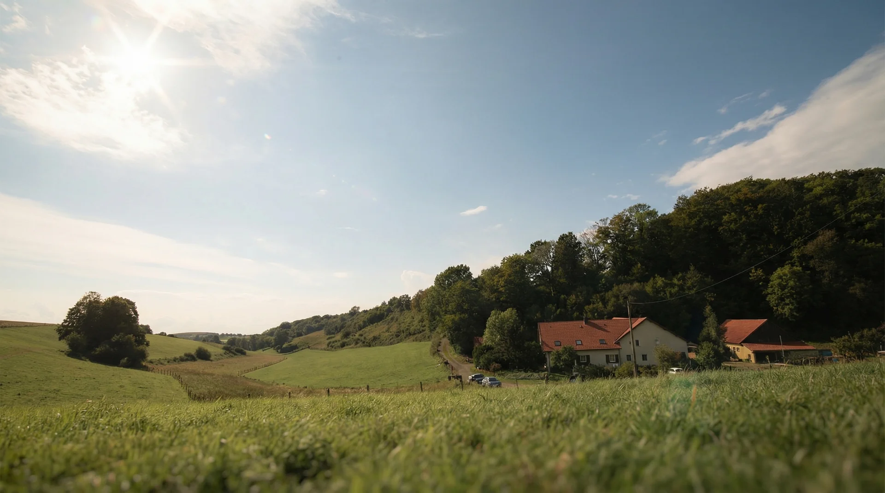
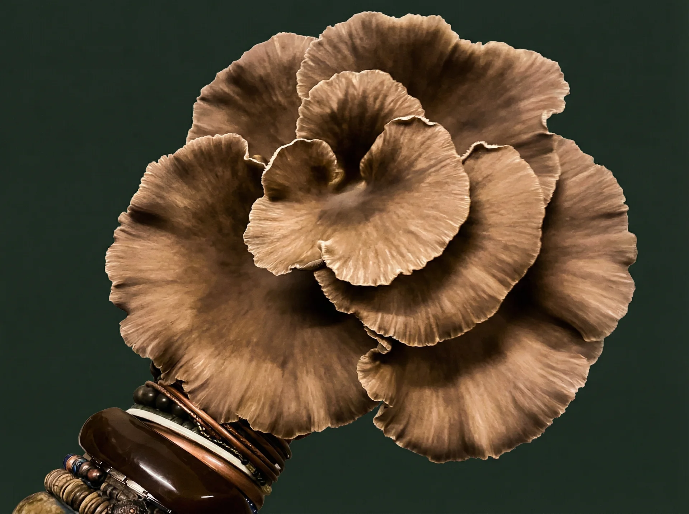
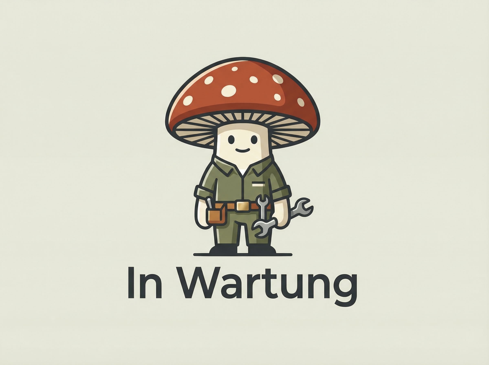
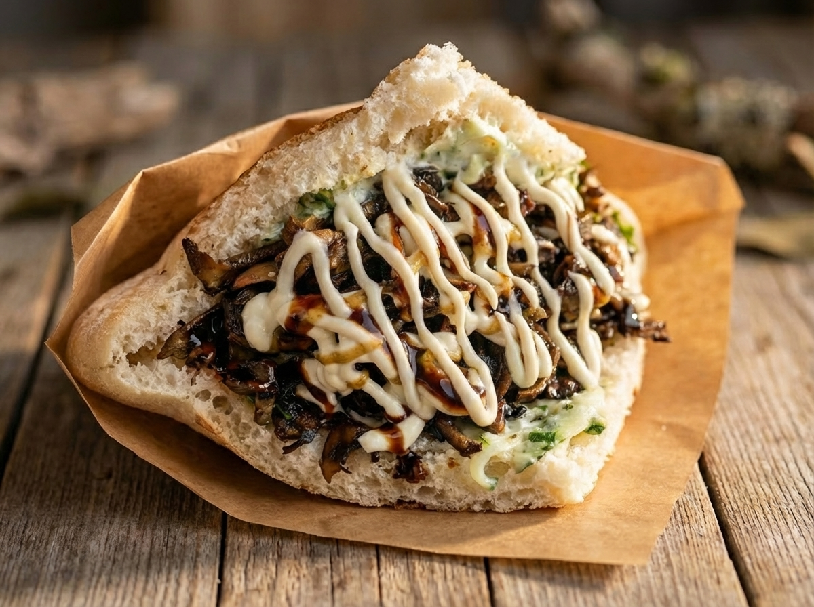
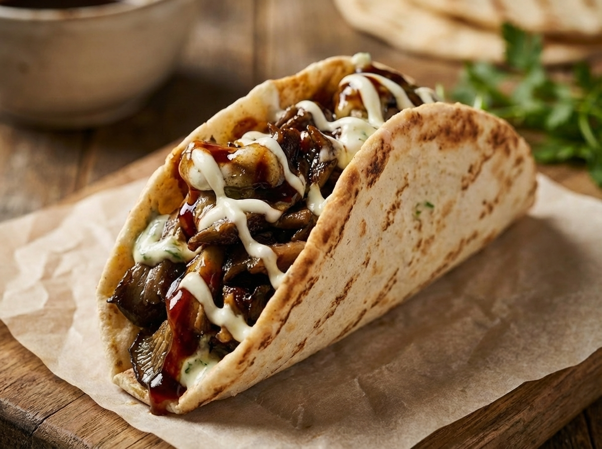

Black Pearl
King Oyster Variante · Samtschwarz & fleischig

Mehr als Bio. Eine Vision aus Myzel, Nachhaltigkeit und Geschmack.
Wir verwenden regionale Dinkelspelzen als nachhaltiges Substrat – ein Nebenprodukt lokaler Landwirtschaft, das in unserem Kreislauf neues Leben findet und wertvolle Pilze hervorbringt.
Von der Substrataufbereitung bis zur Kompostierung – unser System ist ein geschlossener Kreislauf. Kein Abfall, nur Transformation. Jeder Rest wird Ressource.
Minimaler Wasserverbrauch, keine Pestizide, energieeffiziente Klimasteuerung. Unsere Produktion respektiert natürliche Grenzen und maximiert biologische Effizienz.
Jeder Produktionsschritt wird dokumentiert und kontrolliert. Vom Substrat bis zur Ernte – wir machen Qualität sichtbar und nachvollziehbar für unsere Partner und Kunden.

Pleurotus pulmonarius – eine besondere Zuchtlinie des Austernpilzes, kultiviert unter kontrollierten Bedingungen für maximale Qualität und Geschmackskonsistenz.
Reich an pflanzlichem Protein, B-Vitaminen, Kalium und Antioxidantien. Kalorienarm, cholesterinfrei und eine exzellente natürliche Umami-Quelle.
Vom gegrillten Steak-Ersatz über cremige Risottos bis hin zu innovativem Streetfood – der Kastanienseitling überzeugt in jeder Küche.
Drei neue Zuchtlinien in Entwicklung – exklusiv kultiviert für Gourmet-Küche und anspruchsvolle Genießer.
King Oyster Variante · Samtschwarz & fleischig
Pleurotus eryngii · Kräftig wie Wild
Agrocybe aegerita · Nussig-süßlich
Unsere Pilze werden zu unvergesslichen kulinarischen Erlebnissen. Jedes Gericht erzählt eine Geschichte von Qualität, Kreativität und pflanzlicher Kraft.

Gebratene Pilze, eingewickelt in Weizentortilla in frischem Crunch aus Eisberg & Rucola, Tomate, Gurke, Rotkohl, rote Zwiebeln, Aioli & dunkler Balsamico-Crema.

Saftige Kastanienseitlinge, alles, was ein guter Döner braucht plus hausgemachter Aioli & Tzatziki.
Knuspriges Dinkel-Patty, darauf gebratene Kastanienseitlinge, veganer Käse, Rucola, Gurke, Tomate, Aioli, Jalapeño-Kick, dazu scharf angebratene Karotten-Spaghetti plus Sauce nach Wahl.

Unsere Kastanienseitlinge, Salat, Tomate, Aioli & Feuer.
Knackiger Salat-Mix mit heißen Kastanienseitlingen. Frisch trifft Umami.
Wie beim Pilz liegt der größte Teil unter der Oberfläche.
Der Prozess beginnt im Reinraum. Aus ausgewählten Fruchtkörpern wird unter sterilen Bedingungen Gewebe entnommen und zu Reinkulturen aufgebaut. Über Petrischalen, Flüssigkulturen und Mutterkulturen entsteht so die Grundlage für alles Weitere.
In unserer Kulturbibliothek werden diese Kulturen gepflegt und weitergeführt. Ergänzt wird dieser Teil durch hofeigene Honiglösungen: Unsere Bienen sind direkt in den Prozess eingebunden und werden Teil des Nährraums, in dem sich die Kulturen entwickeln.
Die Kultur wird auf regionale Dinkelspelzen ausgebracht. Das Substrat wird vorbereitet, befeuchtet und beimpft, bevor das Myzel es vollständig durchwächst.
Darauf folgt ein gesteuerter Ablauf aus Durchwachsung und Fruchtung. Temperatur, Feuchtigkeit, Luftführung und Zeit müssen dabei genau aufeinander abgestimmt sein, damit ein stabiler und hochwertiger Fruchtkörper entsteht.
Der Pilz ist nicht der letzte Schritt, sondern die Grundlage für den nächsten.
In der Küche wird er weiterverarbeitet und in unsere Gerichte überführt.
Hier wird aus dem, was gewachsen ist, etwas, das man direkt erleben kann.
Jede Zusammenarbeit beginnt mit einer Entscheidung.
Hier finden Sie den passenden Einstieg.
Ein ästhetischer Foodtruck, pflanzliche Streetfood-Kreationen und ein professionelles Setup für Festivals, Firmenveranstaltungen und kulturelle Events.
Tour & Event Kooperation entdecken FÜR PROFIKÜCHENFrische Kastanienseitlinge direkt vom Hof – planbare Lieferung, konstante Qualität und persönliche Betreuung.
Gastronomie-Belieferung ansehen DIREKT VOM HOFErntefrische Kastanienseitlinge – während unserer Öffnungszeiten abholen oder unkompliziert über WhatsApp reservieren.
Frische Pilze entdeckenDer Foodtruck ist da.
Doch im Mittelpunkt steht das Zusammensein.
Ein Ort für Gespräche.
Für Geschmack.
Für Begegnung.
Hunde sind willkommen.
„Im Gespräch liegt die Kraft der Wahrheit."
– in Anlehnung an Platon
Entdecke unsere Lieblingsrezepte – kreiert von unserem Team und inspiriert durch die Vielseitigkeit unserer Seitlinge. Einfach, ehrlich, unglaublich gut.
Arborio-Reis mit glasierten Kastanienseitlingen, Weißwein, Parmesan und frischem Thymian.
Dicke Seitling-Scheiben mariniert in Soja-Balsamico, gegrillt mit Rosmarin und Knoblauch.
Frische Tagliatelle mit gebratenen Seitlingen in leichter Trüffel-Sahnesauce und Pinienkernen.
Ein Blick hinter die Kulissen unseres Hofs – wo Natur, Präzision und Leidenschaft zu etwas Besonderem verschmelzen.
„Wir glauben, dass man schmecken kann, wie etwas gewachsen ist."— Pilzhof Dahler Heide
Frische Pilze direkt vom Hof – regional, saisonal und in bester Qualität.
Frische-Pilze PortalGastronomie, Handel oder Projekte – wir freuen uns auf partnerschaftliche Zusammenarbeit.
Gastronomie-ServicesHofführungen, Workshops und Verkostungen – erlebe regenerative Landwirtschaft hautnah.
Regelmäßig neue Rezepte, Anbautipps und exklusive Einblicke direkt in dein Postfach.
Jetzt abonnieren